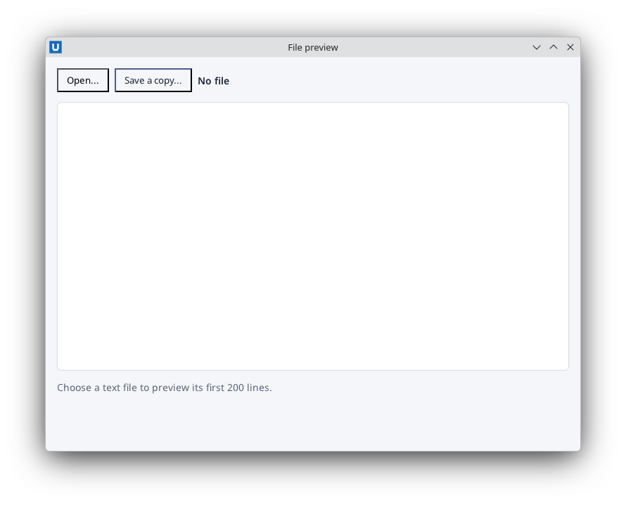

Native file dialogs¶
Goal: let the user choose a file or folder with the operating system's own dialog.
| Dialog | Python (Window) |
PowerShell |
|---|---|---|
| Open one or more files | open_files(multiple=..., title=..., directory=..., filters=[...]) |
Show-NativeHTMLKitFileDialog -Kind OpenFiles [-Multiple $true] |
| Save as | save_file(file_name=..., title=..., filters=[...]) |
Show-NativeHTMLKitFileDialog -Kind SaveFile [-FileName ...] |
| Choose a folder | choose_folder(title=..., directory=...) |
Show-NativeHTMLKitFileDialog -Kind ChooseFolder |
Every dialog returns {"cancelled": bool, "paths": [...]}; a cancelled dialog has cancelled true and no paths. Filters are {"name": "Text files", "extensions": ["txt", "md"]} (extensions without a dot; "*" for all files).
Python: do not block the event worker¶
With the default wait=True the call blocks until the dialog closes, and all later events of the application wait with it. In an event callback, pass wait=False: you get a concurrent.futures.Future immediately, and its done-callback runs on a separate completion thread, where SDK calls are allowed. future.cancel() asks the host to close the dialog.
"""Text file preview: pick a file with the native open dialog, preview it, save a copy elsewhere.
Teaches: Window.open_files() and Window.save_file() with wait=False (the event worker stays free
while the dialog is open), file-type filters, handling cancel (an empty result), and showing
untrusted file content safely with set_text().
Run: python file_preview.py [FILE] (FILE is shown at start, without a dialog)
Guide: docs/how-to/file-dialogs.md
"""
import shutil
import sys
from pathlib import Path
from nativehtmlkit import Application, RpcError
PAGE = """<!doctype html>
<html lang="en"><head><meta charset="utf-8"><style>
body { font: 14px sans-serif; margin: 0; padding: 16px; background: #f4f6fa; color: #1d2433; }
.bar { display: flex; gap: 8px; align-items: center; }
button { padding: 6px 12px; }
#name { font-weight: 600; }
pre { background: white; border: 1px solid #d5dbe8; border-radius: 6px; padding: 10px; height: 360px;
overflow: auto; white-space: pre-wrap; }
#status { color: #5a6578; }
</style></head>
<body>
<div class="bar"><button id="open">Open...</button><button id="save" disabled>Save a copy...</button>
<span id="name">No file</span></div>
<pre id="content"></pre>
<p id="status" role="status">Choose a text file to preview its first 200 lines.</p>
</body></html>"""
FILTERS = [{"name": "Text files", "extensions": ["txt", "md", "log", "csv", "json", "py", "ps1"]},
{"name": "All files", "extensions": ["*"]}]
def main():
with Application.start(name="File preview") as app:
window = app.open_html(PAGE, title="File preview", width=760, height=560)
doc = window.document
current = {"path": None}
def show(path):
path = Path(path)
try:
with path.open(encoding="utf-8", errors="replace") as stream:
lines = [line for _, line in zip(range(200), stream)]
except OSError as error:
doc.set_text("status", f"Cannot read {path.name}: {error.strerror}")
return
current["path"] = path
doc.set_text("name", path.name)
doc.set_text("content", "".join(lines)) # text content: never interpreted as HTML
doc.set_text("status", f"{path.stat().st_size:,} bytes; showing {len(lines)} lines")
doc.remove_attribute("save", "disabled")
def opened(future):
# Runs on a completion thread once the dialog closes; SDK calls are allowed here.
try:
result = future.result() # {"cancelled": bool, "paths": [...]}
except RpcError as error: # for example: no native dialogs in headless mode
doc.set_text("status", f"The file dialog is not available: {error}")
return
if result["cancelled"] or not result["paths"]:
doc.set_text("status", "Cancelled")
else:
show(result["paths"][0])
def saved(future):
try:
result = future.result() # the same shape: one path unless cancelled
except RpcError as error:
doc.set_text("status", f"The save dialog is not available: {error}")
return
if result["cancelled"] or not result["paths"]:
doc.set_text("status", "Cancelled")
return
target = Path(result["paths"][0])
try:
shutil.copyfile(current["path"], target)
except OSError as error:
doc.set_text("status", f"Not saved: {error.strerror}")
return
doc.set_text("status", f"Saved a copy as {target.name}")
doc.on("click", lambda _e: window.open_files(title="Open a text file", filters=FILTERS, wait=False)
.add_done_callback(opened), element="open")
doc.on("click", lambda _e: window.save_file(title="Save a copy", file_name=current["path"].name, wait=False)
.add_done_callback(saved), element="save")
if len(sys.argv) > 1:
show(sys.argv[1])
app.run()
if __name__ == "__main__":
main()

Real capture on KDE Plasma 6.6 Wayland with Core 1.0.3 and Python SDK 0.1.2.
PowerShell: waiting inside a callback is fine¶
Show-NativeHTMLKitFileDialog waits for the result, and while it waits the SDK keeps pumping host messages, so lifecycle requests are still answered. -NoWait returns a request object for Wait-NativeHTMLKitRpc / Stop-NativeHTMLKitRpc instead.
# CSV viewer: choose a CSV file with the native open dialog and show it as an HTML table (PowerShell).
#
# Teaches: Show-NativeHTMLKitFileDialog -Kind OpenFiles with -Filters, the result object
# (cancelled, paths), waiting for a dialog inside a click callback (the SDK keeps pumping
# host messages meanwhile), Import-Csv, and HtmlEncode for every cell.
# Run: pwsh -File csv-viewer.ps1 [-Path data.csv] (Windows PowerShell 5.1: powershell.exe -File csv-viewer.ps1)
# Guide: docs/how-to/file-dialogs.md
param([string]$Path)
$ErrorActionPreference = 'Stop'
Import-Module NativeHTMLKit -ErrorAction Stop
$app = Start-NativeHTMLKitScript -Name 'CSV viewer'
$page = @'
<!doctype html>
<html lang="en"><head><meta charset="utf-8"><style>
body { font: 14px sans-serif; margin: 0; padding: 16px; background: #f4f6fa; color: #1d2433; }
.bar { display: flex; gap: 10px; align-items: center; margin-bottom: 10px; }
button { padding: 6px 12px; }
table { border-collapse: collapse; background: white; }
th, td { border: 1px solid #d5dbe8; padding: 4px 8px; text-align: left; }
th { background: #e9eef6; }
#status { color: #5a6578; }
</style></head>
<body>
<div class="bar"><button id="open">Open CSV...</button><strong id="name">No file</strong></div>
<div id="table"></div>
<p id="status" role="status">Choose a .csv file; the first 500 rows are shown.</p>
</body></html>
'@
function ConvertTo-HtmlText([string]$Text) { return [System.Net.WebUtility]::HtmlEncode($Text) }
function Show-Csv([string]$File) {
try {
$rows = @(Import-Csv -LiteralPath $File | Select-Object -First 500)
} catch {
Set-NativeHTMLKitDocumentText -Document $doc -Element status -Text ('Cannot read the file: ' + $_.Exception.Message)
return
}
$columns = @()
if ($rows.Count -gt 0) { $columns = @($rows[0].PSObject.Properties.Name) }
$html = New-Object System.Text.StringBuilder
[void]$html.Append('<table><thead><tr>')
foreach ($column in $columns) { [void]$html.Append('<th>' + (ConvertTo-HtmlText $column) + '</th>') }
[void]$html.Append('</tr></thead><tbody>')
foreach ($row in $rows) {
[void]$html.Append('<tr>')
foreach ($column in $columns) { [void]$html.Append('<td>' + (ConvertTo-HtmlText $row.$column) + '</td>') }
[void]$html.Append('</tr>')
}
[void]$html.Append('</tbody></table>')
Set-NativeHTMLKitDocumentHtml -Document $doc -Element table -Html $html.ToString()
Set-NativeHTMLKitDocumentText -Document $doc -Element name -Text ([IO.Path]::GetFileName($File))
Set-NativeHTMLKitDocumentText -Document $doc -Element status -Text ("{0} rows, {1} columns" -f $rows.Count, $columns.Count)
}
try {
$window = New-NativeHTMLKitWindow -Application $app -Title 'CSV viewer' -Width 820 -Height 600
$doc = Open-NativeHTMLKitHtml -Window $window -Html $page
$null = Register-NativeHTMLKitDocumentEvent -Document $doc -Type click -Element open -Callback {
param($eventObject)
try {
$result = Show-NativeHTMLKitFileDialog -Window $window -Kind OpenFiles -Title 'Open a CSV file' `
-Filters @(@{ name = 'CSV files'; extensions = @('csv') }, @{ name = 'All files'; extensions = @('*') })
} catch {
# For example in headless test mode, where native dialogs are unavailable.
Set-NativeHTMLKitDocumentText -Document $doc -Element status -Text ('The file dialog is not available: ' + $_.Exception.Message)
return
}
if ($result.cancelled -or @($result.paths).Count -eq 0) {
Set-NativeHTMLKitDocumentText -Document $doc -Element status -Text 'Cancelled'
} else {
Show-Csv @($result.paths)[0]
}
}
if ($Path) { Show-Csv ([IO.Path]::GetFullPath($Path)) }
Set-NativeHTMLKitReady -Application $app
Wait-NativeHTMLKit -Application $app -UntilShutdown
} finally {
Close-NativeHTMLKit -Application $app
}
Notes¶
- The dialog is modal to the window you call it on.
- Native dialogs are not available in headless test mode; the request fails with an RPC error (code -32001). Both examples show the error instead of crashing.
- Treat file content as untrusted: the examples show it with
set_text/HtmlEncode. - The UI libraries have no dialog component; call these SDK methods on
ui.window(Python) or the window returned byStart-NHKUi(PowerShell).